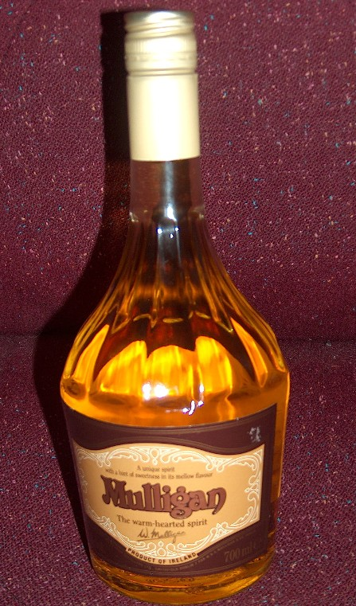

Page 1 of 1
Help! Seeking last bottle of Mulligan Whiskey Liqueur

Posted:
Mon Jan 21, 2013 3:52 pmby delphys
Hi All,
I'm looking to track down and purchase any remaining bottle of MULLIGAN WHISKEY LIQUEUR that might be out there, as a gift for my boyfriend's 40th birthday. He tasted it some time ago in O'Loughlin's pub in Ballyvaughan and has been raving about it ever since, but when we went back there recently they said they had finished their last bottle of it and believed it was out of production. From internet searches I thought it was 'Mulligan Scotch Whisky' but the Celtic Whiskey Shop on Dawson St in Dublin said it was Irish, produced by Irish Distillers originally but they stopped doing it and it hasn't been bought over by another brand.
I'm hoping someone on this forum may be able to point me in the direction of a last, stray bottle that hasn't been opened and that I might purchase as a special 40th birthday gift! Anyone have any ideas re. shops that may still have it in stock? (Internet searches are proving tricky as L Mulligan Grocer's keeps coming up instead!)
Many thanks in advance.
Re: Help! Seeking last bottle of Mulligan Whiskey Liqueur
Posted:
Mon Jan 21, 2013 4:42 pmby IrishWhiskeyChaser
Yes, this has been out of production for some years ... all you can do is hope some of our members may have a bottle or 2 stashed away.
If I remember correctly it was a liqueur whiskey made with honey and pubs often used it for hot toddies. They also had one called Snug in an identical bottle (Different label) especially for hot toddies which I think included lemon and clove essence too.
Put in a saved search for it in ebay and you will be alerted if one comes up for sale.
This is one I owned so people might remember but fear I gave it away, I'll have another look though.
- 
- Mulligan.jpg (135.71 KiB) Viewed 8557 times
There are alternatives to it which might suffice or at least worth a try.
Dublinerhttp://www.thewhiskyexchange.com/P-12127.aspxBushmills Honeyhttp://www.thewhiskyexchange.com/P-18634.aspx
Re: Help! Seeking last bottle of Mulligan Whiskey Liqueur
Posted:
Mon Jan 21, 2013 5:29 pmby delphys
IrishWhiskeyChaser thank you so much for this detailed response!
I now have a photo which will greatly help my search, and I will take your advice re. Ebay.
Will also look into Dubliner and Bushmills Honey whiskey liqueurs as alternatives.
We did try some Glayva
http://www.thewhiskyexchange.com/P-5237.aspx but it was that bit too sweet for his liking.
Many thanks indeed for your help.
ps - If any of the forum members have a bottle of Mulligan's tucked away that they'd be willing to offload, do let me know!
Re: Help! Seeking last bottle of Mulligan Whiskey Liqueur
Posted:
Mon Jan 21, 2013 7:41 pmby Good Whiskey Hunting
I have a bottle somewhere but it a square bottle I think. I don't recall ever opening it, but that's not a guarantee I didn't.
Re: Help! Seeking last bottle of Mulligan Whiskey Liqueur
Posted:
Mon Jan 21, 2013 9:33 pmby Good Whiskey Hunting
Here's the one I was on about.
I don't know which is the older one.
Re: Help! Seeking last bottle of Mulligan Whiskey Liqueur
Posted:
Mon Jan 21, 2013 9:52 pmby varizoltan
IrishWhiskeyChaser wrote:Yes, this has been out of production for some years ... all you can do is hope some of our members may have a bottle or 2 stashed away.
If I remember correctly it was a liqueur whiskey made with honey and pubs often used it for hot toddies. They also had one called Snug in an identical bottle (Different label) especially for hot toddies which I think included lemon and clove essence too.
Put in a saved search for it in ebay and you will be alerted if one comes up for sale.
This is one I owned so people might remember but fear I gave it away, I'll have another look though.
Mulligan.jpg
There are alternatives to it which might suffice or at least worth a try.
Dublinerhttp://www.thewhiskyexchange.com/P-12127.aspxBushmills Honeyhttp://www.thewhiskyexchange.com/P-18634.aspx
I got that one of you Adrian years ago, when i had money to buy whiskeys in bulk

Re: Help! Seeking last bottle of Mulligan Whiskey Liqueur
Posted:
Tue Jan 22, 2013 11:04 amby IrishWhiskeyChaser
varizoltan wrote:I got that one of you Adrian years ago, when i had money to buy whiskeys in bulk
Thanks Z you saved me a search.

Re: Help! Seeking last bottle of Mulligan Whiskey Liqueur
Posted:
Tue Jan 22, 2013 11:07 amby IrishWhiskeyChaser
Good Whiskey Hunting wrote:Here's the one I was on about.
I don't know which is the older one.
You learn something new every day ... never came across that version. I am guessing that the square version would have been the most recent version but just a guess ...

IrishWhiskeyChaser wrote:varizoltan wrote:I got that one of you Adrian years ago, when i had money to buy whiskeys in bulk
Thanks Z you saved me a search.
Re: Help! Seeking last bottle of Mulligan Whiskey Liqueur
Posted:
Tue Jan 22, 2013 11:37 pmby Raven
The square bottle was actually the original and I think
a better shape. There was also another one out for the
Dublin Millenium ' ROSC' with a beautiful label inspired maybe
even designed by Jim Fitzpatrick again a square type
bottle -- Have a bottle stashed somewhere ! IDL again I think.
Re: Help! Seeking last bottle of Mulligan Whiskey Liqueur
Posted:
Wed Jan 23, 2013 12:36 amby delphys
Wow, some serious connoiseurs on this site!
All very interesting information, many thanks.
I shall contact you directly about the possibility of relieving you of the square bottle, Good Whiskey Hunting...
Re: Help! Seeking last bottle of Mulligan Whiskey Liqueur
Posted:
Thu Jan 24, 2013 11:03 pmby IrishWhiskeyChaser
Raven wrote:The square bottle was actually the original and I think
a better shape. There was also another one out for the
Dublin Millenium ' ROSC' with a beautiful label inspired maybe
even designed by Jim Fitzpatrick again a square type
bottle -- Have a bottle stashed somewhere ! IDL again I think.
Hey Raven, any chance you could throw up a pick of the millennium version. Would love to see it ... Always been a fan Jim. What does ROSC stand for or mean????
Re: Help! Seeking last bottle of Mulligan Whiskey Liqueur
Posted:
Fri Sep 13, 2013 12:24 amby Hennessy4711
Hi All I have 5 bottles of the original Mulligan warm hearted spirit square bottles. If anyone is interested let me know. Original box also (3 per box).
Highly collectible.
Orla
Re: Help! Seeking last bottle of Mulligan Whiskey Liqueur
Posted:
Fri Jan 03, 2014 4:18 pmby Dorian
I have sun bottle Mulligan can anyone tell me,
what year he comes from and what price is the same bottle
http://www.marktplaats.nl/a/verzamelen/ ... d721e81819greets Dorian
Re: Help! Seeking last bottle of Mulligan Whiskey Liqueur
Posted:
Tue Feb 16, 2016 11:52 pmby charleymcguffin
Popped into Pettits Supervalue in Gorey today,to get out of the rain and spotted 3-4 dusty bottles of Mulligan on the shelf at €25 .
Re: Help! Seeking last bottle of Mulligan Whiskey Liqueur
Posted:
Wed Feb 17, 2016 11:55 amby Good Whiskey Hunting
charleymcguffin wrote:Popped into Pettits Supervalue in Gorey today,to get out of the rain and spotted 3-4 dusty bottles of Mulligan on the shelf at €25 .
Did you purchase any? I was there a couple of years ago and they had Dublin Dry gin too. It's strange to see those after they've been delisted for so many years.
Re: Help! Seeking last bottle of Mulligan Whiskey Liqueur
Posted:
Wed Feb 17, 2016 1:25 pmby charleymcguffin
I got one,so they should still have a few left....
Re: Help! Seeking last bottle of Mulligan Whiskey Liqueur
Posted:
Wed Feb 17, 2016 4:25 pmby Good Whiskey Hunting
charleymcguffin wrote:I got one,so they should still have a few left....
I've still got a couple of bottles at home so I'm in no hurry to replenish my stocks. If it's there this long I'm sure it'll be there for a few more months.
Re: Help! Seeking last bottle of Mulligan Whiskey Liqueur
Posted:
Thu Mar 03, 2016 6:02 pmby Good Whiskey Hunting
Good Whiskey Hunting wrote:charleymcguffin wrote:I got one,so they should still have a few left....
I've still got a couple of bottles at home so I'm in no hurry to replenish my stocks. If it's there this long I'm sure it'll be there for a few more months.
I dropped in Yesterday to pick one up and i couldn't find any. I asked the staff and they didn't know what I was on about. I did have some luck, I manage to find the Dublin Gin. There were 2 bottles left and had a good layer of dust so had been standing there for a few years.
I guess it's swings and roundabouts. I'm happy with my find all the same.
Re: Help! Seeking last bottle of Mulligan Whiskey Liqueur
Posted:
Wed Mar 15, 2017 6:12 pmby johnniewalker51
A bit late I know, maybe a possible bottle for his 45th Birthday, but currently have a single bottle of Mulligan Irish Liqueur, I guestimate to be an early 80s bottling. It is on my website
www.charterhousewine.co.ukI also turn up a few old bottlings of Irish Mist, Paddy, Tullamore, John Power but you need to be quick or let me know your interest as many of my finding go to Canada and the States.
As far as the Mulligan is concerned - a bottling by Irish Distillers for Mulligan and Co...if I don't sell it I'll probably drink it with one or two of my Irish chums, when I'm next in Dublin ! Cheers Johnnie Walker
Re: Help! Seeking last bottle of Mulligan Whiskey Liqueur
Posted:
Mon Jan 08, 2018 3:05 pmby varizoltan
not Mulligans, but there is one Irish Mist on whiskyauctioneer's aiction ending tonight
https://www.whiskyauctioneer.com/lot/94 ... -old-style